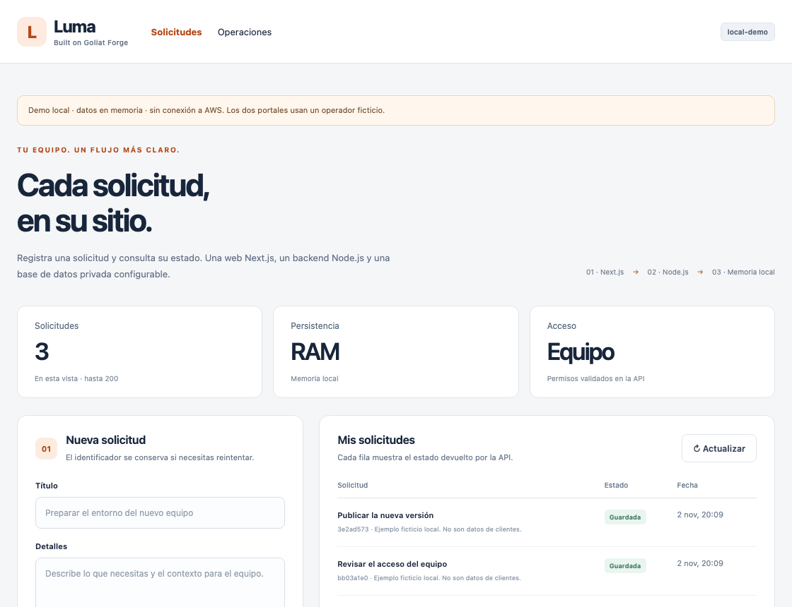

Se crea una vez.
ECR para las imágenes, reglas WAF para las entradas públicas, presupuesto de instalación y estado de Terraform cifrado.
ECRWAFS3 + KMSBudget
Next.js, una API privada Node.js y datos a tu elección: PostgreSQL, Aurora o DocumentDB. Empieza con una web y activa SQS cuando necesites trabajo asíncrono.

01 / COMPARTE LA PLATAFORMA
Una base común para Dev y Prod, con sus aplicaciones, identidades y datos separados. Compartir recursos fijos evita duplicarlos; el ahorro depende de tu carga.
ECR para las imágenes, reglas WAF para las entradas públicas, presupuesto de instalación y estado de Terraform cifrado.
VPC, CloudFront, Next.js en S3, ALB privado, Fargate y Cognito. Elige RDS PostgreSQL, Aurora PostgreSQL/MySQL o DocumentDB. SQS y worker opcionales.
02 / ELIGE CÓMO GUARDAR TUS DATOS
Una aplicación de ejemplo y cuatro perfiles. Terraform conecta el adaptador, el puerto privado y los permisos del motor elegido.
API y worker usan roles. El administrador inicial tiene un secreto gestionado por AWS. Los lectores generan coste y no sustituyen los backups.
Ver ejemplo completoMotores, roles y réplicas03 / EXPLORA LA ARQUITECTURA
Selecciona un componente para entender su función, su acceso y el módulo que lo crea.

El WAF protege las entradas web y API. Los datos y eventos usan sus controles de red e IAM. En móvil, desliza el diagrama o elige Dev/Prod.
04 / SIGUE UNA SOLICITUD
Luma incluye dos vistas de ejemplo: solicitudes y operaciones. Explora aquí su lógica; el repositorio contiene el frontend Next.js, la API Node.js y los adaptadores de datos para ejecutarla de verdad.
CloudFront + S3
Node.js + Fargate
SQL / DocumentDB · IAM + TLS
SQS → Lambda · opt-in
Envía una solicitud y cambia de usuario. Cada uno ve sus registros; el operador puede consultar el equipo.
Datos ficticios en memoria. Reutiliza la lógica de dominio del producto; no llama a AWS. En el despliegue real, la API valida la identidad y los permisos.
05 / EXPLORA LOS MÓDULOS
Cada módulo tiene sus entradas y salidas. La aplicación es un ejemplo reemplazable; la infraestructura es la base de tu siguiente proyecto.
06 / PREPARA TU CONFIGURACIÓN
Ejemplos comentados para Dev, Prod y una demo independiente. Los datos reales de tu cuenta, planes y archivos de ejecución se mantienen fuera de Git.
# Copy to .local/config/dev.auto.tfvars to override this complete object.
# This optional file is explicitly passed LAST by the CLI; it stays outside Git.
# Development owns its VPC, database, identity pool and API. Events are optional.
environment = {
name = "dev"
vpc_cidr = "10.40.0.0/16"
endpoint_az_count = 1 # Lower endpoint cost; cross-AZ traffic is possible.
nat_enabled = false # AWS service endpoints only; no general Internet egress.
cpu = 256 # 0.25 vCPU; supported product range: 0.25..16 vCPU.
memory = 512 # MiB per Fargate task.
replicas = 1
max_replicas = 2
# Percentage CPU target and cooldowns in seconds. Replica bounds are above.
# Terraform reconciles desired capacity to replicas on each apply.
autoscaling = {
target_cpu = 60 # 10..90 percent.
scale_in_cooldown = 120 # 0..3600 seconds.
scale_out_cooldown = 60
}
# Choose ONE database profile. The application adapter and private port follow it.
# postgres | aurora-postgresql | aurora-mysql | documentdb
db_kind = "postgres"
# Aurora/DocumentDB readers. RDS uses a managed secret and supports standby HA only.
db_read_replicas = {
# Each Aurora/DocumentDB reader accepts these optional fields:
# reader-a = {
# instance_class = "db.r6g.large" # Omit to inherit the writer class.
# promotion_tier = 1 # 0..15; smaller promotes first.
# availability_zone = null # Omit/null for stable placement in this VPC.
# }
# For a cluster profile: reader-a = { instance_class = "db.r6g.large", promotion_tier = 1 }
}
db_instance_class = "db.t4g.small"
db_engine_version = null # RDS: 17; Aurora: regional minor within PG17/MySQL8.4; DocumentDB: 5.0.0 (IAM).
db_storage_gb = 20 # RDS only. Cluster storage is managed by Aurora/DocumentDB.
# RDS only. Null = bounded triple storage; near 65536 GiB, autoscaling is off.
# To disable it explicitly, set this equal to db_storage_gb. Otherwise use
# a whole GiB ceiling at least 10% higher than db_storage_gb (max 65536).
db_max_storage_gb = null
# Null = <installation>-<environment>-final. Use a NEW unique name before
# a repeated teardown if that snapshot already exists. Never contains secrets.
db_final_snapshot_identifier = null
db_multi_az = false # Clusters: true requires at least one reader in another AZ.
db_backup_days = 7
deletion_protection = true # Protects database, ALB AND Cognito; review before teardown.
skip_final_snapshot = false
events_enabled = false # Optional: SQS, DLQ, Lambda worker and recovery timer.
# Used only when events_enabled = true. All values are whole numbers.
# Queue visibility = 6 * worker_timeout; one Lambda concurrency slot is
# reserved above max_concurrency for the outbox recovery invocation.
events = {
worker_memory_mb = 256 # 128..10240 MiB.
worker_timeout = 30 # 1..900 seconds.
max_concurrency = 2 # 2..50 simultaneous queue invocations.
batch_size = 5 # 1..10 messages per invocation.
max_receive_count = 5 # 1..100 attempts before the DLQ.
retention_days = 7 # 1..14 days in the source queue.
dlq_retention_days = 14 # At least retention_days; at most 14 days.
recovery_minutes = 5 # 1..60 minutes between recovery invocations.
}
mfa_required = false # Cognito TOTP is optional in Dev.
# No domain required: CloudFront supplies an HTTPS *.cloudfront.net hostname.
domain_name = null
certificate_arn = null # For a custom domain, use its ACM certificate in us-east-1.
# Add another map entry to reuse a reference view under another URL path.
# These two interfaces are examples, not generated business applications.
# Map key = URL path. label = link text; view = requester or operator.
portals = {
tenant = { label = "Request portal", view = "requester" }
admin = { label = "Operations", view = "operator" }
}
}
npm ci && npm run demo
./forge configure --name myforge
./forge deploy --config .local/config --environment dev --yes
Para Prod: dominio y certificado ACM, cuotas y prueba de restauración. El despliegue crea recursos facturables; el presupuesto avisa y no detiene el consumo.
DECISIONES DE CAPACIDAD
Compartes la plataforma; dimensionas cada entorno. La base de datos, el ALB, los endpoints privados y Fargate generan coste aunque la aplicación no reciba peticiones.
Ver costes y decisiones de capacidad↗ECR · WAF · S3/KMS · Budget
ALB · RDS · Fargate · PrivateLink
CloudFront · SQS · Lambda · logs
PARTE DE LA FAMILIA GOLIAT